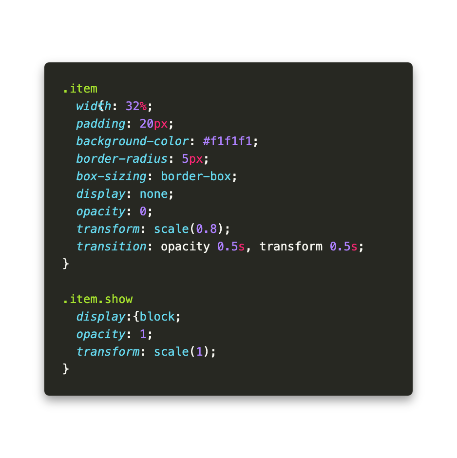

カテゴリー分け
See the Pen Untitled by ユキノプログラミング (@ybjsvwly-the-lessful) on CodePen.
HTMLについて
カテゴリー種別
コード内でどういうカテゴリー名で扱っていくかを決めて、それぞれに「data-category」属性をつける。
カテゴリーの中身の設定
実際にカテゴリー分類させたいアイテムたちを入力する。
それぞれ分類させたいカテゴリーに合うように「カテゴリー種別」パートで設定した「data-category」属性と一致するように個別で付けていく。
CSSについて
レイアウト調整
好きなようにレイアウト組んでみてください。
基本、横並び(flex)もしくはグリット(grid)で実装してもらえれば綺麗にいくとおもいます。
JSによる新class名付与時の動き
itemを表示する際に、JSでclass名を付与したり外したりすることで画面を切り替えます。
その際に付与されるclass名がついたときに表示させて、別カテゴリーが押されたタイミングで元々ついていたclass名が移動して・・・
みたいな動きが入るためそれの時用の実装が必要になるります。

JavaScriptについて
カテゴリー分けの詳細
- カテゴリーの種類と設置箇所を認識する。
- 各カテゴリーがクリックされたときに「data-category」の種別を認識させる。
- それと同時にshowというクラス名を付与する。（show付与時の表示設定はCSSで行う）
- 少しフワッと表示させるための設定を入れる。